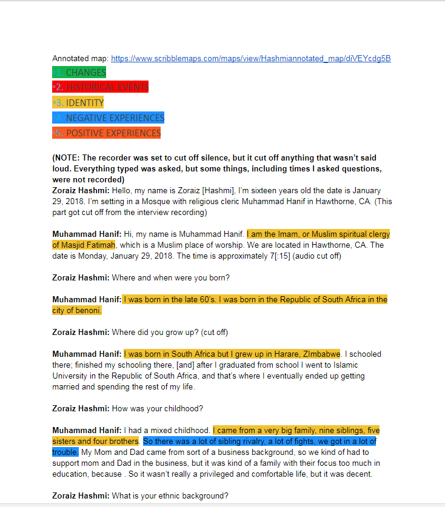

For this project we interviewed someone. We then had to write a tracnscript based on the interview done. The transcript was color coded upon talking about a certain topic, such as historical events or positive memories.

Click here to hear the interview
(Refresh to stop)
We also had to create a annotated map for our projects. The map had pins describing important locations mentioned in the interview. Click on the map to go to a deatailed view of it